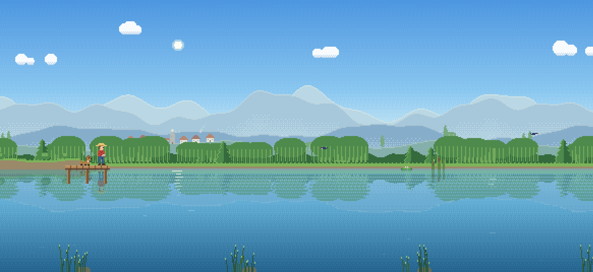
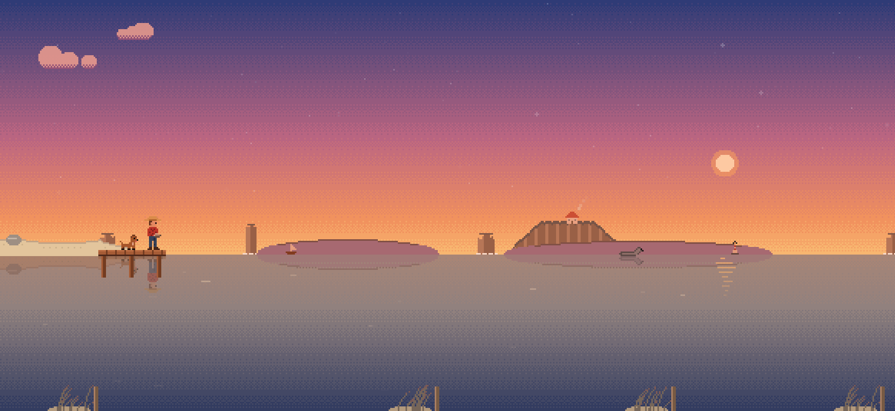
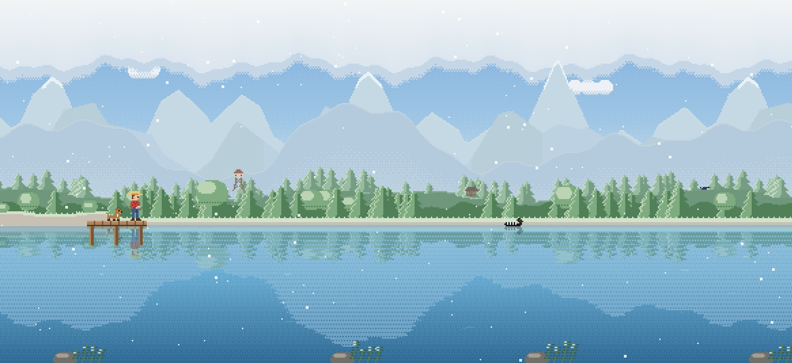
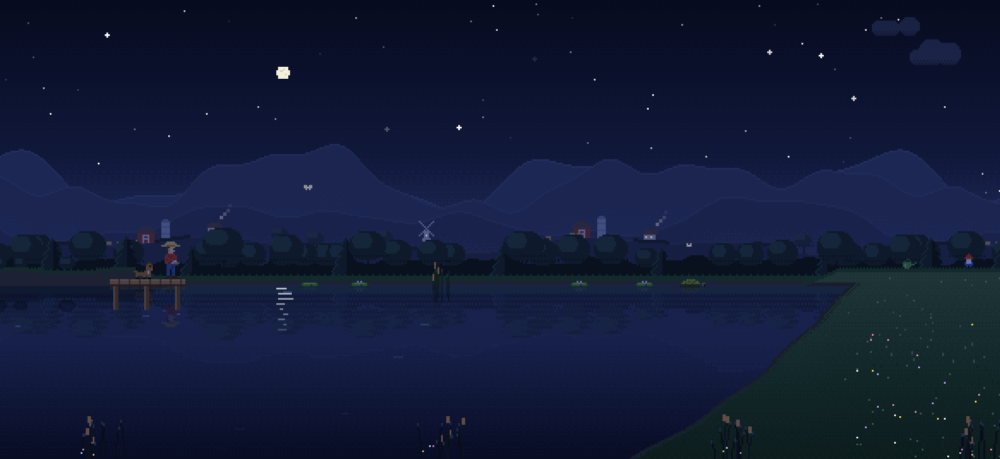
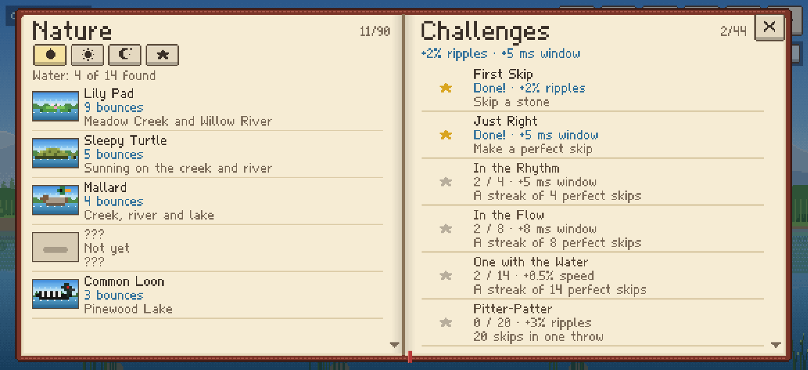
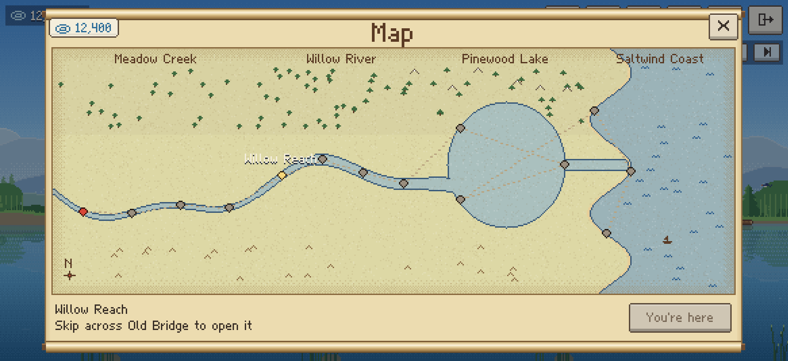

Swipe to throw a flat stone across still water, and tap just as it touches down for a perfect skip. Bounce off lily pads and sleepy turtles, earn ripples, pick better stones, and find your way from Meadow Creek's mill pond out to the open sea. Then launch one all the way to space.
Swipe
Flick across the water. Faster goes further, and a low, flat throw skips best, just like the real thing.
Tap
Tap as the stone kisses the water for a perfect skip. String them together into a streak.
Keep going
Make it across and the stone tumbles on over the land, knocking things over. When it stops, kick it on.




A little world to wander
- Sixteen spots in five regions: Meadow Creek, Willow River, Pinewood Lake, Saltwind Coast and, for the brave, the stormy Devil's Triangle. Skip across one to open the next.
- All the way to space: past a strong arm come the Sling Shot, the Stone Cannon and the Stone Rocket. Aim, time the launch, and follow your stone up past kites, balloons and the jet stream.
- Real time of day: the light follows your clock, from soft dawns to starry nights, and the weather changes through the day: sun, passing clouds, rain, fog, and snow at the lake.
- A nature journal of over 100 creatures and curiosities to find and photograph, from mallards and otters to the northern lights, and a few legends that only turn up at the right moment.
- Ninety-three challenges, each with a small bonus that lasts.
- A companion on the dock: a dog or a cat to start, and more to adopt, up to a very well-behaved pet rock.
- Sixty hats, pet outfits and stone trails to win and wear, and new people to play as.
- Thirty gentle songs, tunes to learn as you skip, and the sounds of each place: crickets, loons, waves and rain.
- Twelve languages, and a text size that suits you.
- Plays offline. No ads, no accounts, nothing collected.


Free to play
Meadow Creek is free to play. One purchase, the Full Game, opens Willow River, Pinewood Lake, Saltwind Coast and the Devil's Triangle, and adds idle mode (it skips stones for you while you watch), no limit on ripples (the launchers need it), more pets to adopt, rarer wildlife, and a thank-you hat, collar and trail.